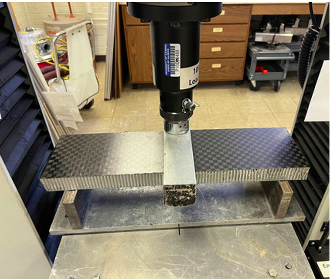

01
Three-point bend
- Tested 500 × 138 mm sandwich panels as specified in the Formula SAE requirements.
- Applied 50 mm displacement during three-point bending.
- Used the data for regulated panel sizing and structural equivalency.